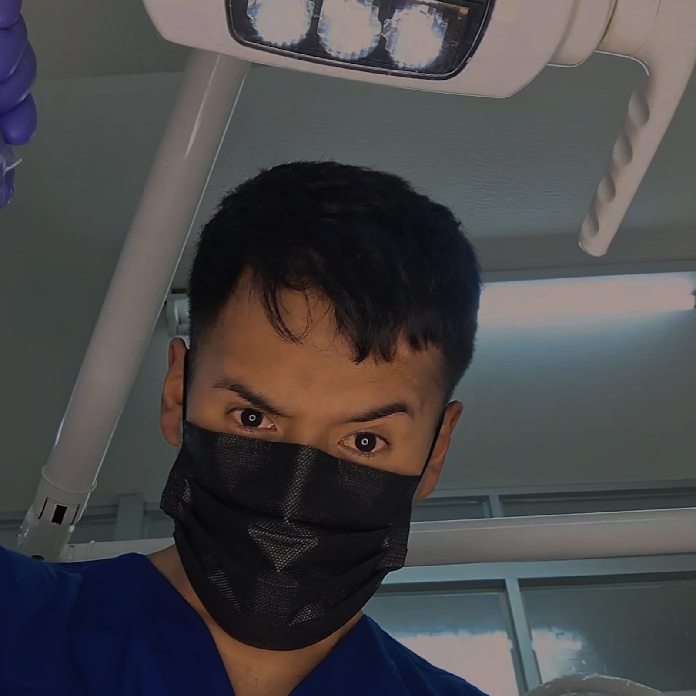

Foto: Erick Cruz
EL DESAFÍO DE UNIVERSALIZAR EL BIENESTAR EN UN TERRITORIO DIVERSO BOLIVIANO
Entre los avances del Sistema Único de Salud y las brechas en infraestructura, el país busca consolidar una atención digna y equitativa para toda su población.
La salud en Bolivia atraviesa un proceso de transformación profunda, marcado por el ambicioso objetivo de garantizar cobertura médica gratuita y de calidad a todos sus ciudadanos. Con la implementación y consolidación del Sistema Único de Salud (SUS), millones de personas que antes se encontraban al margen del sistema formal ahora tienen acceso a consultas, medicamentos y cirugías sin costo directo. Este modelo busca romper la barrera económica que históricamente separó a la población de su derecho fundamental a la vida, priorizando la atención primaria en los barrios y comunidades más alejadas.
Sin embargo, el camino hacia la eficiencia total enfrenta obstáculos estructurales significativos. La geografía boliviana, con su contraste entre valles, llanos y altas cumbres, impone retos logísticos para la distribución de suministros y la referencia de pacientes. A esto se suma la necesidad de fortalecer el tercer nivel de atención, los hospitales de especialidades. Si bien se han inaugurado centros de medicina nuclear y hospitales de alta complejidad en el eje troncal, la saturación en las salas de emergencias y las listas de espera para procedimientos complejos revelan que la demanda crece a un ritmo superior al de la infraestructura y el equipamiento técnico disponible.
Un rasgo distintivo y valioso del modelo boliviano es la Salud Familiar Comunitaria Intercultural (SAFCI). Este enfoque reconoce que la salud no es solo la ausencia de enfermedad, sino un equilibrio que en Bolivia integra la medicina académica con los saberes ancestrales de los pueblos indígena originarios campesinos. Esta visión inclusiva ha permitido mejorar los indicadores de salud materna e infantil, al generar mayor confianza entre los pacientes rurales y el personal médico. El desafío actual reside en cerrar la brecha digital y tecnológica, optimizando la gestión hospitalaria y garantizando condiciones laborales estables para los profesionales de blanco que sostienen el sistema.
La salud en Bolivia es un tejido en construcción que requiere no solo de mayor inversión presupuestaria, sino de una gestión transparente y humana. El éxito a largo plazo dependerá de la capacidad del Estado y la sociedad para transitar de un sistema reactivo a uno preventivo, donde la detección temprana sea la norma y no la excepción. En última instancia, la fortaleza de una nación se mide por la salud de sus habitantes; proteger este bien común es la inversión más rentable y justa que Bolivia puede realizar para asegurar su futuro.